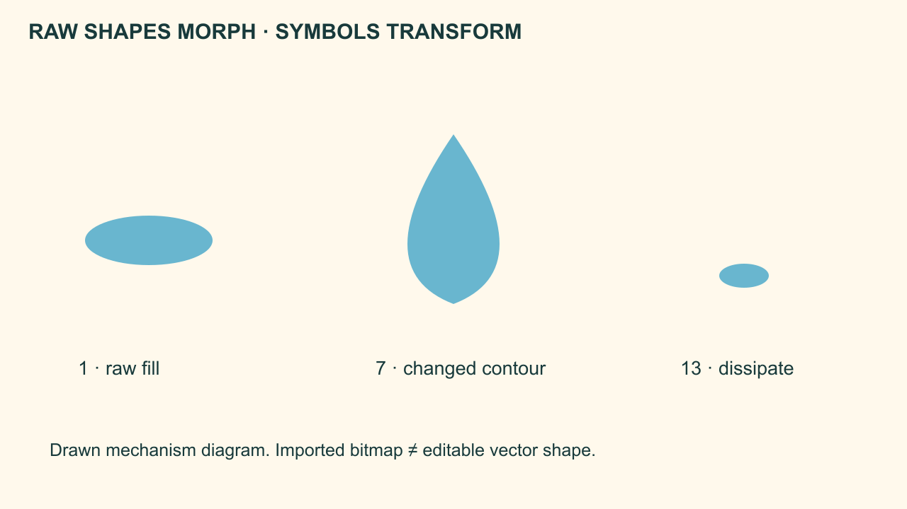

Camera-framing study: a restrained push-in must retain essential story information.
The Caveman and the Third Stone
Add one controlled effect and one justified camera move that support the Caveman’s action.
Workbook 7 of 8 · two provisional sessions
My supports
Turn on any help you want. Your teacher may have set some for you. They change how the guide helps, not what is assessed.
Continue the same film
Open your selected production FLA from Workbook 06, then File → Save As → Caveman_07_effects.fla. Carry forward all three Scenes and the entire Library. Keep repair/director copies separate, then return to the chosen production version. Do not begin a fresh blank project.
Your production job
Add one controlled effect and one justified camera move that support the Caveman’s action.
Keep: Splash test + camera comparison + mixed scene preview
Notes and checked stages stay in this browser when storage is available. They are not submitted, graded or shared with school apps. Read aloud uses the browser voice; teacher recordings have not been supplied.
Restore uses the JSON recovery file from this workbook. The readable text file is for review only. Download before changing device. Keep personal information out of practice notes.
How animators work
Block the meaning, test the action, refine the transition and keep a revision trail. A smooth result still needs readable intention, believable contact and a clear delivery.
Understand before you move
Effects and camera should direct attention toward the story event. A visible effect is successful only if its timing and meaning fit the action.
Classic tweens transform symbol instances. Shape tweens interpolate raw vector shapes. Imported bitmap art and Graphic instances are not raw shapes. The camera belongs to the main Scene timeline for this workflow, not inside the character symbol. Sound and camera settings must be checked in the installed document type and final export.
Predict the result of today’s main action, then test that prediction in Animate.
Evidence of understanding
We look for the finished action, an observed repair and a brief explanation using your own timeline.
Independent director condition: Make the landing feel heavier using pose, effect and sound. Keep the same jump distance and avoid camera shake as a substitute for impact.
Defence: Identify the frame that causes the splash/sound, and explain what the camera move helps the viewer notice.
Support settings help access the same task. They do not lower the success criteria. School outcome/assessment registration remains for the teacher to confirm.
Session 1 · Lesson 1
Build and understand
Provisional 70-minute session: a short explanation, four guided stages, then a check. Actual classroom timing needs a cold run.
TODAYAdd one controlled effect and one justified camera move that support the Caveman’s action.
01
Identify the event before making the effect
IN SHORTYou can name the event and show the effect’s origin beside the correct contact point.
READ ALOUD
DOCUMENT: Caveman story · Workbook 07 · main Scene or named action as stated below SELECT: Crossing first-contact frame and water area. TOOLS / ROUTE: Timeline review; Notes guide layer.
Mark the landing contact and the moment any splash should begin. If the feet land on dry bank, use a small dust effect instead of unexplained water from the feet.
Choose one effect: a water droplet disturbed near the stream or a bank dust puff. State what causes it.
Keep the first test in a separate short Graphic so the effect can be inspected without the whole film.
STEP CHECKLIST
GLOSSARY
cause and effect: An event producing a visible or audible response.
WHYAn effect needs a cause and location; random splashes weaken physical logic.
CHECKYou can name the event and show the effect’s origin beside the correct contact point.
FIXIf the effect starts before its cause, move the first visible key later. If there is no water contact, choose dust or omit the splash.
WORKED EXAMPLE · DIFFERENT OBJECTA foot on a dry path raises dust; a stone entering water creates a splash.
STRETCH (AFTER THE CHECK PASSES)Use a tiny falling pebble as the visible cause of a water effect.
Method basis: A1 · A2 · A3. Values and sequence are authored for this project.
02
Build a genuine raw-shape tween
IN SHORTThe selected span is a shape tween and intermediate frames change the contour, not merely the object scale.
READ ALOUD
DOCUMENT: Caveman story · Workbook 07 · main Scene or named action as stated below SELECT: A new Splash_Test or Dust_Test Graphic; raw drawn vector fill. TOOLS / ROUTE: Oval/Brush tool; Insert Keyframe; right-click span → Create Shape Tween.
Draw a simple filled droplet or puff at frame 1 with no symbol wrapper. At frame 7 create a new key and change the raw vector shape; at 13 create a smaller dissipating shape.
Apply Shape Tween to the suitable spans. Scrub to check the intermediate contours. At frame 14 insert a BLANK keyframe on every visible effect layer; ordinary F5 frames would keep the last puff visible.
Keep the test simple: one coherent shape per layer. If you need multiple droplets, use separate layers or designed frame-by-frame drawings.
STEP CHECKLIST
GLOSSARY
shape tween: Interpolation between raw vector shapes.
raw shape: Editable vector fill/stroke artwork that is not a symbol instance.

Raw-vector contour changes illustrate a shape tween; placed bitmap artwork requires a different method.
WHYThis makes the distinction between transforming a symbol and changing a raw shape visible.
CHECKThe selected span is a shape tween and intermediate frames change the contour, not merely the object scale.
FIXIf the span fails, check that contents are raw vector shapes. Breaking apart a bitmap does not turn it into clean editable vector artwork.
WORKED EXAMPLE · DIFFERENT OBJECTA drawn blob can morph into a teardrop; a placed photo cannot become a clean vector droplet simply by selecting Shape Tween.
STRETCH (AFTER THE CHECK PASSES)Compare a shape-tween droplet with a frame-by-frame splash and justify the clearer one.
Method basis: A1 · A2 · A3. Values and sequence are authored for this project.
03
Place the effect at its real cause
IN SHORTOne caused effect appears once and clears in time for the next story beat.
READ ALOUD
DOCUMENT: Caveman story · Workbook 07 · main Scene or named action as stated below SELECT: Main Scene effect layer above the appropriate ground/water area. TOOLS / ROUTE: Library → place effect Graphic; Play Once or timeline-limited exposure.
Place the effect at the marked event frame. Use Play Once for the Graphic if available and suitable, or limit its main-timeline exposure so it does not repeat.
Scale it to support the contact, keeping the Caveman’s feet and important pose readable.
Scrub before, during and after contact. Confirm it is absent before the cause and clears before it distracts from retrieval.
STEP CHECKLIST
GLOSSARY
exposure: The frames over which artwork remains visible.
WHYA well-timed small effect can clarify impact more effectively than a large continuous overlay.
CHECKOne caused effect appears once and clears in time for the next story beat.
FIXIf it repeats, check Graphic playback mode and parent exposure. If the contact is hidden, reduce size or move the effect behind the foot.
WORKED EXAMPLE · DIFFERENT OBJECTA camera flash should appear briefly at the shutter event, not loop through the whole scene.
STRETCH (AFTER THE CHECK PASSES)Let two small effect elements finish at different times for controlled overlap.
Method basis: A1 · A2 · A3. Values and sequence are authored for this project.
04
Add a motivated main-Scene camera move
IN SHORTThe camera moves only when it has a purpose, and essential information remains visible throughout.
READ ALOUD
DOCUMENT: Caveman story · Workbook 07 · main Scene or named action as stated below SELECT: Me_clever main Scene; Camera tool; no nested character edit. TOOLS / ROUTE: Camera tool → camera layer → keys and zoom controls.
Create a Camera layer with the Camera tool on the main Scene. Frame the three counting stones and the hand before adding movement.
Use a neutral camera key near the final proud phrase and a later key with a restrained push from 100 to about 110 percent. Choose an appropriate classic camera span as supported by your installed Animate version.
Review the full count. Keep fingers, mouth and stones within the visible camera area. The old 80–105 camera test was only a control check, not a cue plan for your new recording.
STEP CHECKLIST
GLOSSARY
push-in: A camera move that makes the subject occupy more of the frame.
camera framing: The portion of the scene shown to the audience.
WHYThe push-in emphasizes the Caveman’s pride after the story goal is achieved.
CHECKThe camera moves only when it has a purpose, and essential information remains visible throughout.
FIXIf the whole character grows but the background does not, you probably scaled the character instead of the camera. If the camera controls differ, use the static framing fallback and record the gap.
WORKED EXAMPLE · DIFFERENT OBJECTA slow move toward a detective’s realization can focus attention on the change in thought.
STRETCH (AFTER THE CHECK PASSES)Compare static and moving versions with a viewer and justify your selection.
Method basis: A1 · A2 · A3. Values and sequence are authored for this project.
Session 2 · Lesson 2
Refine, repair and direct
Provisional 70-minute session: a short explanation, four guided stages, then a check. Actual classroom timing needs a cold run.
TODAYAdd one controlled effect and one justified camera move that support the Caveman’s action.
05
Build a simple sound hierarchy
IN SHORTSpeech remains clear and there are no cut-off effects, unexplained repeated sounds or accidental silence at transitions.
READ ALOUD
DOCUMENT: Caveman story · Workbook 07 · main Scene or named action as stated below SELECT: Voice and effects on separate named audio layers. TOOLS / ROUTE: Frame sound properties; timeline preview; final movie playback.
Keep voice clearly intelligible. Add only approved or self-made effects for the jump/landing and optional stone contact.
Align impact sound with the visible contact event, allowing a deliberate stylistic offset only if you can justify it. Prevent effects from masking “one, two, three.”
Listen through speakers or headphones at a comfortable level and check the entire film, including Scene transitions.
STEP CHECKLIST
GLOSSARY
sound hierarchy: Prioritizing important audio, such as voice, over supporting effects.
synchronization: Aligning related picture and sound events.
WHYSound can establish weight and focus, but the story depends on understanding the performance.
CHECKSpeech remains clear and there are no cut-off effects, unexplained repeated sounds or accidental silence at transitions.
FIXIf a sound repeats unexpectedly, inspect its Sync setting and exposure. If mixing controls are insufficient, adjust the source effect in an approved audio editor and reimport.
WORKED EXAMPLE · DIFFERENT OBJECTA quiet click under dialogue supports an action; a loud sustained crash can hide the words.
STRETCH (AFTER THE CHECK PASSES)Create weight with a short low impact and a small debris tail rather than a louder peak.
Method basis: A1 · A2 · A3. Values and sequence are authored for this project.
06
Use follow-through where the viewer looks
IN SHORTThe eye is drawn to the intended main action and the recovery decreases into rest.
READ ALOUD
DOCUMENT: Caveman story · Workbook 07 · main Scene or named action as stated below SELECT: An actually separate hand or prop inside Count_Performance after the proud accent; the seated body/head remains one baked image. TOOLS / ROUTE: Pose keys; staggered finishes; short playback loop.
Choose the separate hand or a separate stone prop to finish slightly after the whole-body accent. Work inside Count_Performance at the existing cue frame numbers. Do not move the baked head independently of its torso. Keep its motion smaller than the main accent.
Inspect the final silhouette and the stones while the camera is closest. Remove small movements that compete with counting.
Preserve a clean ending hold long enough for the result to register.
STEP CHECKLIST
GLOSSARY
overlapping action: Related parts beginning or finishing at different times.
follow-through: Motion continuing after the main action ends.
WHYOverlap adds life when the main action remains readable.
CHECKThe eye is drawn to the intended main action and the recovery decreases into rest.
FIXIf the character appears rubbery, reduce the delay and amplitude. Do not animate every piece simply because it has a layer.
WORKED EXAMPLE · DIFFERENT OBJECTA coat hem can settle after a person stops, while the face remains the focus.
STRETCH (AFTER THE CHECK PASSES)Use a stone wobble as the only secondary action after the final line.
Method basis: A1 · A2 · A3. Values and sequence are authored for this project.
07
Repair an effect that hides the action
IN SHORTThe viewer can identify the contact and result after the repair.
READ ALOUD
DOCUMENT: Caveman story · Workbook 07 · main Scene or named action as stated below SELECT: A duplicate with an oversized effect or excessive camera zoom. TOOLS / ROUTE: Effect scale/exposure; camera keys; before/after frames.
Create an obvious obstruction in the duplicate, such as a puff covering the first-contact pose.
Ask a viewer what happened at the landing. Repair the visual hierarchy by changing size, timing, layer order or framing.
Keep one before/after comparison and name the story information you recovered.
STEP CHECKLIST
GLOSSARY
visual hierarchy: The order in which elements attract attention.
WHYThe repair evaluates effects by communication rather than spectacle.
CHECKThe viewer can identify the contact and result after the repair.
FIXIf the effect still dominates, omit it temporarily and restore the essential pose first.
WORKED EXAMPLE · DIFFERENT OBJECTAn oversized title can hide the product it is meant to introduce; reducing it restores the purpose.
STRETCH (AFTER THE CHECK PASSES)Keep the effect but reduce its contrast so the pose remains dominant.
Method basis: A1 · A2 · A3. Values and sequence are authored for this project.
08
Direct a heavier landing
IN SHORTThe heavier version remains readable and physically motivated, with clear speech later in the film.
READ ALOUD
DOCUMENT: Caveman story · Workbook 07 · main Scene or named action as stated below SELECT: Your independent landing/effect/sound version. TOOLS / ROUTE: Pose keys; effect timing; sound cue; static camera comparison.
Keep the same jump distance. Revise the landing compression, recovery spacing and supporting effect/sound to imply greater weight.
Compare with the original under the same static camera first. Add a camera choice only if it helps read the action.
Save and reopen. Explain the cause of each effect and which change most altered the impression of weight.
STEP CHECKLIST
GLOSSARY
weight cue: A visible or audible choice suggesting mass and force.
WHYThe changed condition tests animation principles across pose, spacing and supporting media.
CHECKThe heavier version remains readable and physically motivated, with clear speech later in the film.
FIXIf the difference depends only on louder sound, return to contact, compression and recovery.
WORKED EXAMPLE · DIFFERENT OBJECTIndependent task: no heavy-landing solution is supplied.
STRETCH (AFTER THE CHECK PASSES)Make a lighter landing as a third comparison without changing the character’s size.
Method basis: A1 · A2 · A3. Values and sequence are authored for this project.
Before you submit
Student QA.
Evidence conversation
Keep it short and specific.
SENTENCE FRAMES
At frame ___, I chose ___ so the viewer could ___. The problem was caused by ___. I changed ___ and checked ___. Under the changed condition, I revised ___ because ___.
Figures marked Illustration are drawn, not screenshots. Step values are starting points authored for this project. Draft for teacher review; not yet classroom-piloted.